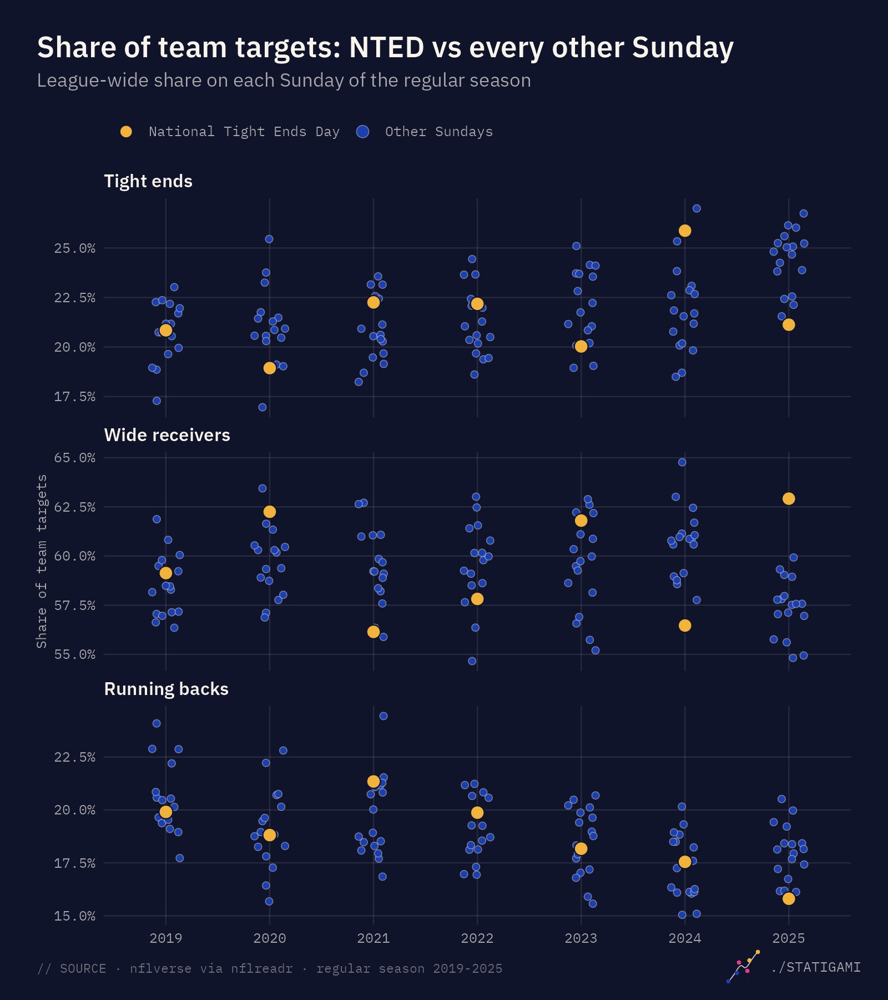
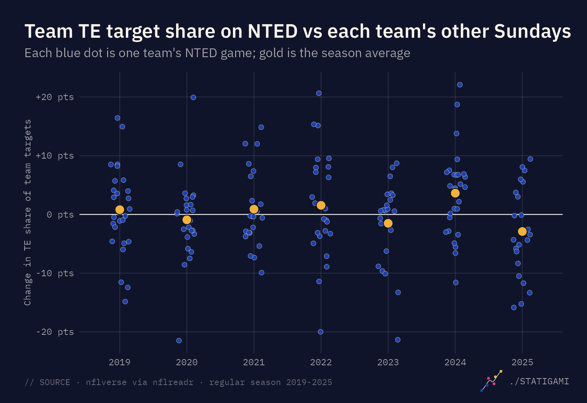
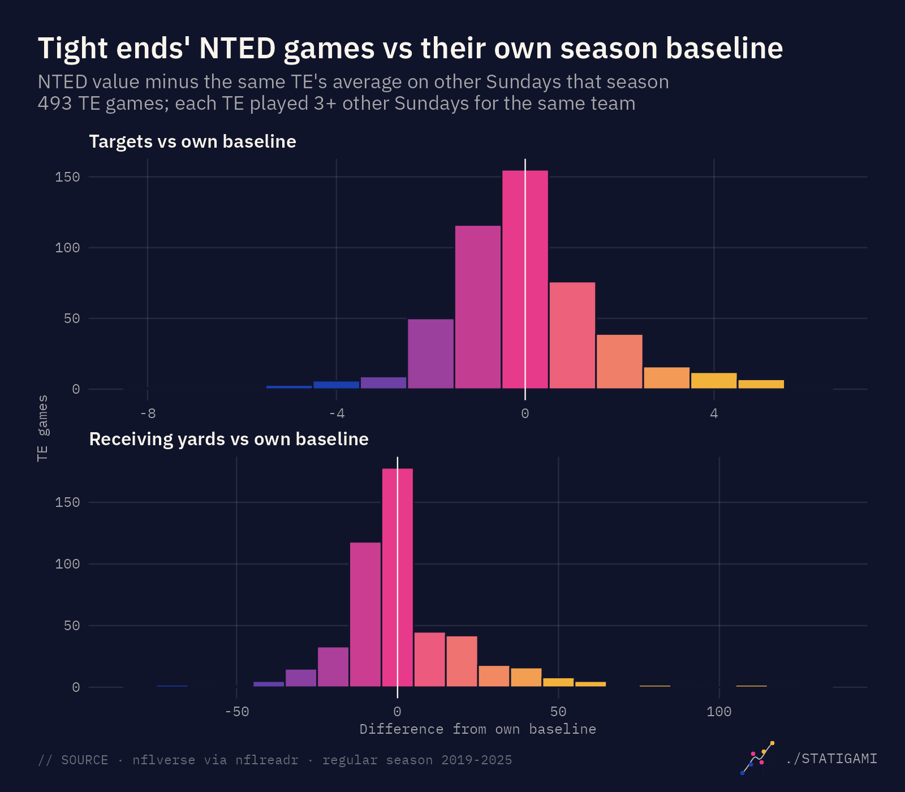
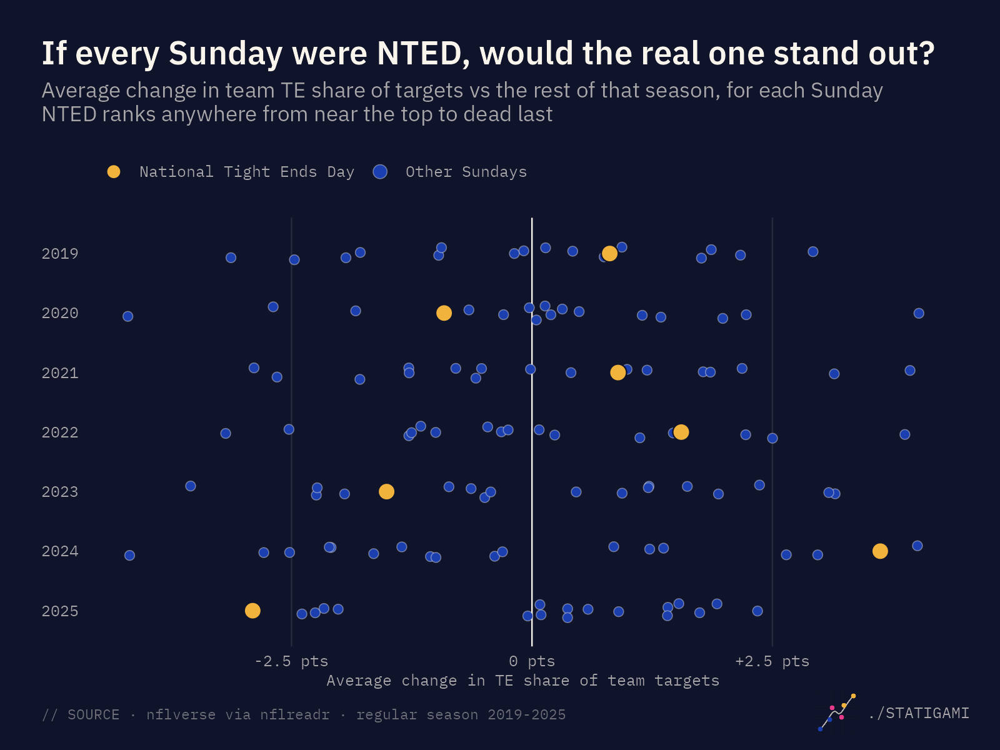
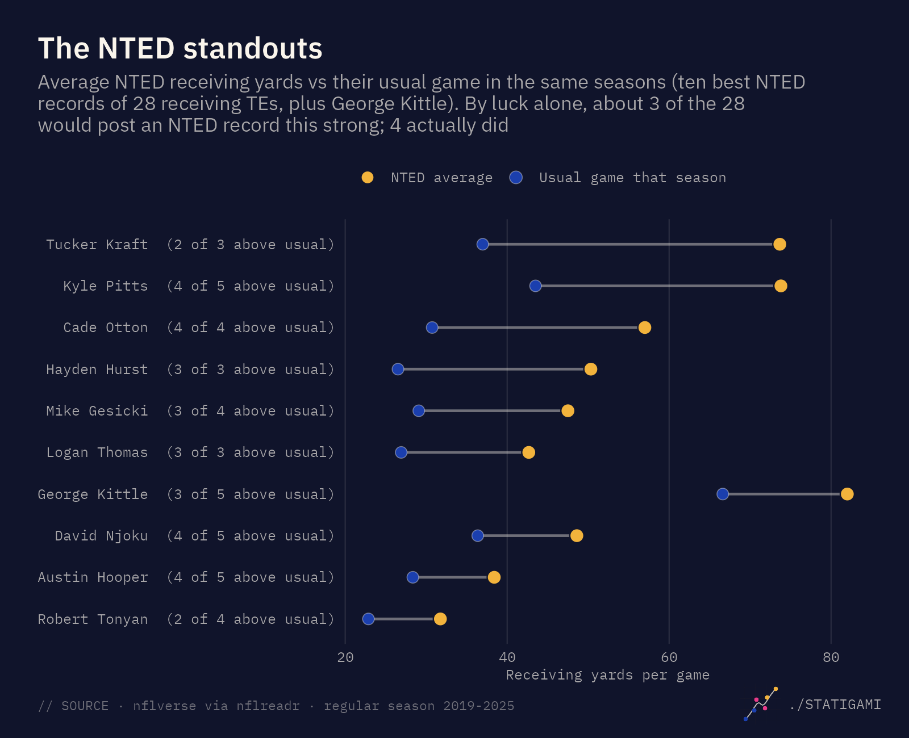

Do tight ends play better on National Tight Ends Day?
Seven seasons of data say the holiday doesn’t change how teams use their tight ends. It has still produced some great games.
// NFL · 2019-2025 · 84 NTED games · N=493 tight end games
The NFL has a holiday for tight ends. Every year on the fourth Sunday of October, the league celebrates National Tight Ends Day. So here is the obvious question: do tight ends actually play better that day?
Short answer: no. Teams don’t throw to their tight ends any more than usual on NTED. But the day has produced some huge individual games, and a few tight ends have records on it that look almost too good. Most of that is what chance alone would produce.
What National Tight Ends Day is
According to the San Francisco 49ers, the name was born in Week 2 of 2018, when 49ers tight end Garrett Celek caught an 11-yard touchdown from Jimmy Garoppolo against Detroit, and it was Garoppolo who coined it. The NFL then made the fourth Sunday of October the official date. The Pro Football Hall of Fame marks October 27, 2019 as the first official league-wide National Tight Ends Day.
That gives seven official NTEDs to study: 2019 through 2025.
How this was measured
The comparison that matters is not “tight ends on NTED vs tight ends in general”. Tight ends’ share of the passing game has been rising: from 20.8% of team targets in 2019 to 23.9% in 2025. So every NTED is compared with other Sundays in the same season.
- NTED games are games played on the NTED Sunday itself: 84 games over seven seasons. Thursday and Monday games in the same NFL week are left out (they are checked separately below).
- Team usage is a team’s tight end share of its targets: every tight end counted, backups included.
- Individual tight ends are compared with their own average on other Sundays that season, for the same team, using only games they actually played. A game a player missed is never counted as a zero.
Teams don’t throw to tight ends more on NTED

On a league-wide basis, the tight end share of targets on NTED averaged almost exactly what a typical Sunday produced (−0.04 percentage points vs the median Sunday). NTED was above the median Sunday in three of seven seasons. In 2024 it ranked second of 18 Sundays; in 2025 it ranked last.

Team by team, the picture is the same. Across 168 team games on NTED, the tight end share of targets was 0.4 points higher than each team’s own baseline, with a 95% interval of −0.8 to +1.5 points. 51% of teams were above their baseline: a coin flip.
Individual tight ends: same targets, a few more yards

Across 493 tight end games, NTED targets were exactly in line with each player’s normal workload (−0.01 per game). Receiving yards were slightly higher: about 2 yards per player above baseline (95% interval: 0.3 to 3.7).
That yardage bump is the one result in this analysis that looks unusual, so it gets a closer look below.
Reality check: what if every Sunday were NTED?
The strongest test is a placebo: run the exact same comparison for every ordinary Sunday, as if each one were National Tight Ends Day, and see whether the real NTED stands out.

For team usage it doesn’t. A random set of seven ordinary Sundays, one per season, matches or beats NTED 40% of the time.
For receiving yards, the real NTED does look unusual at first: only 2% of random Sunday sets match its average. But that average leans on three huge games:
| NTED tight end yards vs own baseline | NTED value | Random Sunday sets as high |
|---|---|---|
| Average, all games | +1.9 yds | 2% |
| Average, without the three biggest games | +1.1 yds | 11% |
| Median tight end | −1.8 yds | 17% |
Take out Travis Kelce’s 179 yards in 2023, Kyle Pitts’s 163 in 2021 and Tucker Kraft’s 143 in 2025, and NTED looks like any other Sunday. The typical tight end actually gains a little less than usual on NTED. With about ten measures tested, one standing out is roughly what chance alone would produce.
The result also holds when NTED is compared only with nearby Sundays (within three weeks), when Thursday and Monday games of NTED week are included, when each opponent’s usual tight end defense is accounted for, and when any single season is left out.
Case study: George Kittle

| Season | Opponent | Game | Yards | His usual | Rank among his games |
|---|---|---|---|---|---|
| 2019 | vs CAR | NTED Sunday | 86 | 74 | 4th of 14 |
| 2020 | at NE | NTED Sunday | 55 | 83 | 5th of 8 |
| 2021 | vs IND | Did not play | |||
| 2022 | vs KC | NTED Sunday | 98, 1 TD | 48 | 2nd of 15 |
| 2023 | at MIN | Monday of NTED week | 78 | 63 | 6th of 16 |
| 2024 | vs DAL | NTED Sunday | 128, 1 TD | 70 | 2nd of 15 |
| 2025 | at HOU | NTED Sunday | 43, 1 TD | 59 | 7th of 11 |
Across his five NTED Sundays, Kittle has averaged 82 receiving yards against 67 in his usual games those seasons, with a touchdown in each of his last three NTED Sundays. Random games from the same seasons would produce a record that strong about 1 time in 10: a genuinely good run, but not one that rules out luck.
Two oddities: he did not play on NTED in 2021, and in 2023 the 49ers played on Monday night, so Kittle’s NTED-week game was not on National Tight Ends Day itself.
The NTED standouts, and the luck behind them

Among the 28 receiving tight ends with at least three NTEDs (and at least three targets in a usual game), a few have remarkable records:
- Hayden Hurst: above his usual yards in all three of his NTEDs.
- Cade Otton: above his usual in all four.
- Logan Thomas: three for three.
- Kyle Pitts: four of five, averaging 74 NTED yards against 44 in his usual games.
Here is the catch. Give 28 players a handful of games each, and some will string together great ones by chance. About three of these 28 would be expected to post an NTED record this strong by luck alone. Four did.
So, do tight ends play better on National Tight Ends Day?
Not in any way the data can detect. Across seven seasons, teams gave their tight ends the same share of the passing game on NTED as on any other Sunday, and individual tight ends saw the same number of targets. A small bump in receiving yards traces back to a few outstanding games rather than a league-wide pattern.
What NTED does have is stories: Kelce’s 179 yards, Pitts’s 163, Kittle’s 128, and a handful of players who seem to show up every fourth Sunday of October. They are worth celebrating. They just aren’t caused by the calendar.
Data and methods
Data. Weekly player stats, schedules, snap counts and rosters from nflverse via the nflreadr R package. Regular season only, 2019-2025.
NTED games. Games played on the fourth Sunday of October, matched on the actual game date. Thursday and Monday games in the same NFL week are excluded from the main analysis and tested separately.
Who counts as a tight end. The team’s roster position for that season (some players change positions over their careers). Taysom Hill is counted as a tight end.
Games played vs missed. Weekly stats only include players who recorded a stat, so snap counts are used to identify everyone who played. A tight end who played but was not targeted counts as zero targets; a tight end who did not play is left out rather than counted as zero.
Uncertainty. 95% intervals come from a bootstrap that resamples whole games. The “random Sunday” comparisons draw one ordinary Sunday per season, 10,000 times.
Limitations. Seven seasons is a small sample, and this is observational: it can show whether NTED looks different, not why. Touchdowns are too rare to analyze on their own.